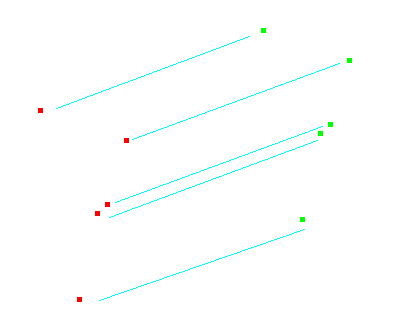

XY shift
This tool applies a 2D translation (shift) to all geometries in the input layer. The user needs to specify X and Y coordinate offsets.
This operation is useful in spatial conflation (merging) tasks, when there is a need to integrate data with heterogeneous accuracy and coordinate reference systems.
Note that in those cases which involve different spatial reference systems (datums, projections, etc.), a proper reprojection of layers into a common target system is required.
